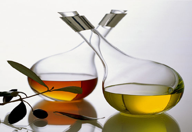

ভিনেগারের/চিরকার গুনাগুন
ভিনেগারের/চিরকার গুনাগুন
ভিনেগার পরিচিতি
আমাদের প্রাত্যহিক জীবনের নানান রান্নায় ভিনেগার ব্যবহৃত হয়।আমাদের প্রিয় নবী হযরত
মুহাম্মদ (সঃ) এর প্রিয় খাবারের তালিকায় ভিনেগার ছিল।

ভিনেগার বা সিরকা হলো এক ধরনের তরল পদার্থ। মাংস রান্না, আচার কিংবা সালাদ বানানো
ইত্যাদি অনেক কিছুতেই ভিনেগার ব্যবহার করা হয় অহরহ। রান্না ছাড়াও বিভিন্ন গৃহস্থালি
কাজে কিংবা কোনো কিছু পরিষ্কার করতেও ভিনেগার ব্যবহার করা হয়। ভিনেগারের অনেক স্বাস্থ্য
উপকারিতাও আছে । আমাদের দেশে সাধারণত সাদা ভিনেগার বেশি ব্যবহার করা হয়। ১ টেবিল চামচ
সাদা ভিনেগারে ০.৯ গ্রাম শর্করা, ০.৯ মিলিগ্রাম ক্যালসিয়াম, ০.১ মিলিগ্রাম ম্যাগনেসিয়াম
রয়েছে।আসুন জেনে নেয়া যাক ভিনেগারের ৫টি স্বাস্থ্য উপকারীতা।
ভিনেগারের গুনাগুন
ওজন কমাতে সহায়ক : নিয়মিত ভিনেগার খাওয়ার অভ্যাস করলে ওজন কমানোর প্রক্রিয়া কিছুটা সহজ
হয়। যারা ওজন সমস্যায় ভুগছেন তাঁরা সালাদের সাথে মেয়োনেজের বদলে ভিনেগার দিয়ে খান।
তাহলে মেয়োনেজের অতিরিক্ত ক্যালোরি ও ফ্যাট ছাড়াই আপনি সালাদকে সুস্বাদু করতে পারবেন।
তাই ওজন কমাতে সালাদ, সবজি কিংবা অন্যান্য খাবারে ভিনেগার যোগ করুন।
ক্লান্তি দূর করা : ভিনেগার খেলে শরীরের রক্ত প্রবাহ সচল থাকে এবং রক্তে অক্সিজেন
প্রবাহ বাড়ে। এ ছাড়াও ভিনেগার শরীরের বিভিন্ন অঙ্গ-প্রত্যঙ্গের ক্লান্তি দূর করা এবং
শরীরের বিভিন্ন স্বাভাবিক কার্যাবলীকে সচল রাখে। ফলে নিয়মিত ভিনেগার খেলে শরীর চনমনে
থাকবে এবং ক্লান্তি ভাব কমে যাবে।
ডায়াবেটিসের জন্য ভালো : কয়েকটি গবেষণায় এর প্রমাণ পাওয়া গিয়েছে যে শর্করা জাতীয়
খাবারের সাথে ভিনেগার খেলে রক্তে শর্করার প্রবেশ কিছুটা ধীর হয়। ভিনেগার পরিপাকের কিছু
এনজাইমকে রোধ করে যেসব এনজাইমের কাজ হলো শ্বেতসারকে শর্করার ক্ষুদ্র কণায় রূপান্তরিত
করা। ২ টেবিল চামচ ভিনেগার আধা কাপ পানির সঙ্গে মিশিয়ে রাতে ঘুমানোর আগে খেলে সকালে
রক্তে শর্করা প্রায় ৪-৬ শতাংশ কমে।তাই যারা ডায়াবেটিস সমস্যায় ভুগছেন তারা নিয়মিত
ভিনেগার খাওয়ার অভ্যাস করলে উপকার পাবেন।
হজমে সহায়তা করে : অনেকেরই হজমে সমস্যা আছে। কিছু খেলেই হজমে সমস্যা হয় যাদের তাদের
জন্য ভিনেগার বেশ উপকারী। ভিনেগার হজমে সহায়তা করে। নিয়মিত সালাদের সাথে ভিনেগার খেলে
হজম ক্ষমতা বৃদ্ধি পায়। এছাড়াও ভিনেগার খাবার থেকে বিভিন্ন পুষ্টি উপাদান শোষণ করতে
সহায়তা করে।
অনিদ্রা দূর করে : অনেকেই আছেন যারা রাতে ঘুমানোর সমস্যায় ভুগছেন। রাতে ঘুমাতে যাদের
সমস্যা হয় তাঁরা ভিনেগার ব্যবহারে এই সমস্যা থেকে মুক্তি পাবেন। প্রতিদিন রাতে ঘুমের
আগে গরম পানির সঙ্গে ভিনেগার মিশিয়ে সেই পানিতে গোসল করে নিলে শরীরের স্নায়ুর উত্তেজনা
কমে আপনার মন শিথিল হবে এবং প্রশান্তি আসবে। ফলে সহজেই ঘুম চলে আসবে এবং গভীর ঘুম হবে।